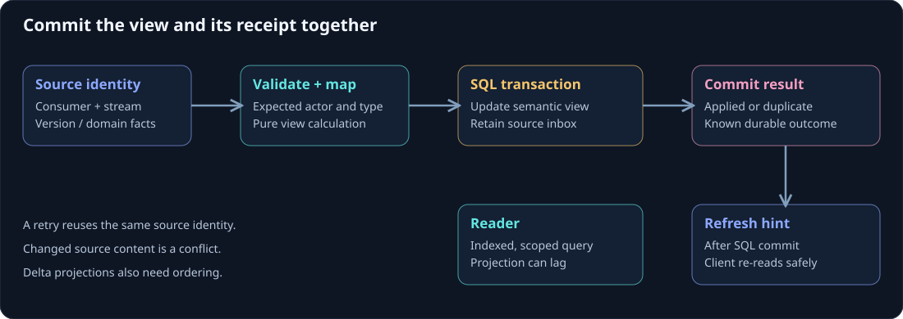

Design a durable projection
A projection translates domain events into the facts needed by readers. The workshop application projects registration events into a small SQL card containing registration ID, workshop ID, attendee ID, display name, and status. That lets a UI read one record without restoring the actor.
On this page
Begin with the query: what does the page need, how does it filter, who can access it, and how many records may one request return? Those answers define the table and indexes more usefully than serializing the actor's entire state into a generic row.

Map the event into a view
A typed listener makes the supported inputs visible. The sample handles request and cancellation events and maps each to a complete registration card.
[ProjectionStreamSubscription(typeof(RegistrationActor))]
public sealed class RegistrationCardsProjection(IRegistrationCardWriter writer) : ProjectionActor
{
public Task On(EventEnvelope<RegistrationRequested> envelope)
{
RegistrationCard card = RegistrationCards.From(envelope.Event);
return writer.ApplyAsync(card, RegistrationCards.Source(envelope, card), CancellationToken.None);
}
public Task On(EventEnvelope<RegistrationCancelled> envelope)
{
RegistrationCard card = RegistrationCards.From(envelope.Event);
return writer.ApplyAsync(card, RegistrationCards.Source(envelope, card), CancellationToken.None);
}
}
IRegistrationCardWriter is an application contract. The host registers a durable implementation, operates the projection route and recovery, and supplies access to the verified committed source. The attribute declares a subscription; it does not create a SQL table, credential, or replay worker.
The sample verifies that the envelope's source actor ID matches the registration ID and records stream/version as its source identity. It hashes the domain card separately from trace headers for stable comparison. A hash comparison is not authentication of an event: the serving route still owns trusted source admission.
Use semantic tables
The example schema has typed columns and an index on attendee, workshop, and registration ID. A user's registration list can therefore filter in SQL and return a small page. A notification view or reporting view may need another table and another index because it answers a different question.
A whole-actor JSON row can be helpful for diagnostics or migration. As a normal cross-actor query path, it often forces the application to load, parse, and scan too much data. Promote frequently used fields into purpose-built columns and keep queries bounded.
Commit the view and source receipt together
The SQL sample uses one transaction for the materialized card and its projection inbox record. The inbox key is consumer, source stream, and source version. A retry with a retained identical identity returns a duplicate outcome; a changed domain payload at that identity fails.
CREATE TABLE dbo.WorkshopProjectionInbox
(
Consumer nvarchar(64) NOT NULL,
SourceStream nvarchar(256) NOT NULL,
SourceVersion bigint NOT NULL,
DomainHash char(64) NOT NULL,
CONSTRAINT PK_WorkshopProjectionInbox
PRIMARY KEY (Consumer, SourceStream, SourceVersion)
);
The complete writer and schema are in the workshop example. It is an application projection for full-state cards. It does not implement the framework's atomic event transaction store or a complete migration/deployment policy.
Delta projections require a different rule: a balance increment or per-event counter cannot simply skip an older unapplied event. Preserve ordering, detect relevant gaps, and recover missing source work before advancing. See idempotency and ordering.
Keep the handoff durable
An event commit and a projection write are separate durability boundaries. A compatible store can commit projection handoff work with events, and a recovery worker can redeliver it after a crash. Choose and enable that route explicitly. Inline publication and a subscription alone do not provide the same recovery record.
If SQL fails after an event was committed, the event still belongs to history. Restore the pending projection work and retry its writer; do not pretend the command never happened or append it again to make the view catch up.
Make failure visible at the right scope
A missing source, unknown event type, or invalid payload is different from a temporary SQL timeout. Repeated transient failures need retry/backoff. Deterministically invalid data needs a quarantined record and operator action, with enough source identity to investigate.
One broken registration should not require global startup to replay every actor. Keep repair bounded and isolate affected streams or partitions. Report projection readiness and lag where the read endpoint can use them.
Continue with read-model design, catch-up and rebuilds, and realtime updates.